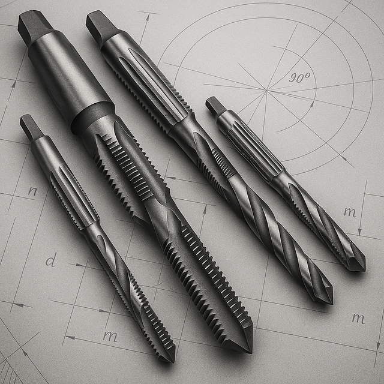

Мітчики машинно-ручні метричні правіМетчики мр метрические правые
Мітчик м/р М 5 вик. 2 глухий Р6М5 потовщений хвостовик з зовнішнім центромМетчик м/р М 5 исп. 2 глухой Р6М5 утолщенный хвостовик с наружным центром
ОписОписание
Мітчик м/р М 5 вик. 2 глухий Р6М5 потовщений хвостовик з зовнішнім центром — професійний металорізальний інструмент для нарізання внутрішньої метричної різьби в отворах. Основні параметри: різьба M5. Виготовлено з матеріалу швидкорізальна сталь Р6М5, що забезпечує стійкість різальної кромки при обробці конструкційних і легованих сталей, чавуну та кольорових металів. В наявності 2001 шт. на складі у Харкові. Ціна 120 грн без ПДВ. Опт і роздріб, відправлення по всій Україні. Замовлення від 2 000 грн.Метчик м/р М 5 исп. 2 глухой Р6М5 утолщенный хвостовик с наружным центром — профессиональный металлорежущий инструмент для нарезания внутренней метрической резьбы в отверстиях. Основные параметры: резьба M5. Изготовлен из материала быстрорежущая сталь Р6М5, что обеспечивает стойкость режущей кромки при обработке конструкционных и легированных сталей, чугуна и цветных металлов. В наличии 2001 шт. на складе в Харькове. Цена 120 грн без НДС. Опт и розница, отправка по всей Украине. Заказ от 2 000 грн.
ХарактеристикиХарактеристики
| Тип інструментуТип инструмента | МітчикМетчик |
|---|---|
| КатегоріяКатегория | Мітчики машинно-ручні метричні правіМетчики мр метрические правые |
| РізьбаРезьба | M5M5 |
| МатеріалМатериал | Р6М5Р6М5 |
| Напрямок різьбиНаправление резьбы | праваправая |
| Тип отворуТип отверстия | глухийглухой |
| ВиконанняИсполнение | 22 |
| СтанСостояние | новийновый |
| Код товаруКод товара | FLK-00185FLK-00185 |
| НаявністьНаличие | 2001 шт.2001 шт. |